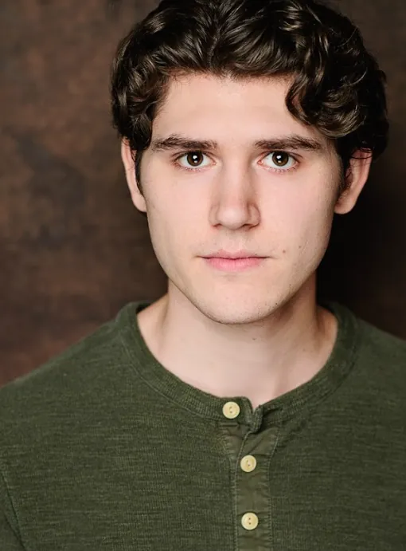
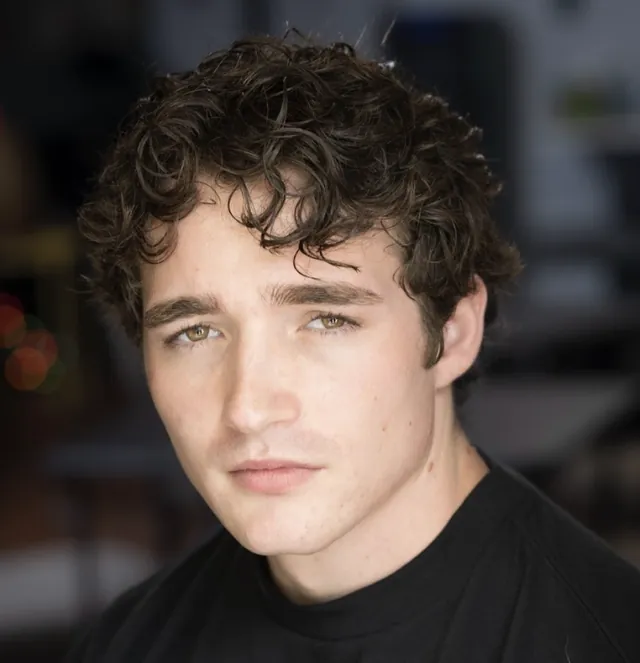

A Kling Brothers series
The Things I Didn't Do

About TTIDD
A notebook. A list.
And then, the bodies.
Ethan, a damaged teenager with a dark imagination, lives in the shadow of the school’s bad boys, always trying to prove his worth but never quite brave enough to do anything truly wrong. To vent, he keeps a secret notebook where he draws and writes, in a macabre way, how he would get rid of the people around him who don’t value him the way he wishes they would.
One day, he loses the notebook in a coffee shop and recovers it the next day. Relieved, he thinks everything is fine — until the people he “killed” in his fantasies begin turning up dead exactly as he imagined. As the police investigate, Ethan grows increasingly panicked, unsure of what to do.
Who is behind the murders? A stranger who found the notebook? His friends? Or Ethan’s own imagination, which may have gone too far?
Themes
Topics Covered
The narrative is a dense psychological thriller that subverts the hero's journey, transforming imagination — usually seen as a gift — into a lethal weapon. Through Ethan's journey, the series discusses the alienation of contemporary youth, the fragility of mental health, and the irreversible impact of our inner shadows. It's a story about the moment when the mask of normalcy falls and we are forced to confront what we have cultivated in the dark.
-
01
The Abyss of Fantasy
-
02
The Architecture of Invisibility
-
03
The Weight of Silence and of Guilt
-
04
Involuntary Complicity
Meet the Cast
Meet the talented actors and actresses who bring the characters in this series to life.

Ethan
Jacob Stutchman
Jade
Taylor Marie Hutchison
Ava
Julia Ros

Blaze
Jacob Dorsett
Zoe
Zipporah Mainville
Max
Colin Mcdermott
Link
Fransiscus Fendrian
Theo
Christopher Sheeran
Arthur
Alex P. Jackson
Mr. Harris
David A. Clark
Coach Mark
Kevin Anthony
Nikki
Nikki Marrow
Nancy
Suzanne O'Donnell
Behind the camera
Technical Team
To bring Ethan's dark universe to life and transform his imagination into a visceral reality, we assembled a team of visionaries committed to psychological suspense storytelling. We present the minds responsible for translating silence and chaos into a unique cinematic experience.
- DirectorFernando Tosetti
- ScreenwritersJulia Antuerpen
Thiago Kling - Director of PhotographyEmmanuel Gallegos
- Casting DirectorMarco DiGeorge
- Art DirectorBrooke Kayla
Producers
- Robert M. Albertsen Jr. coordinating producer
- Gustavo Andrade co-producer
- Thiago Catelani co-producer
- Lucas Haddad co-producer
Makeup Department
- Spencer Brint hair and makeup artist
- Shannon Olivia Curran head makeup artist
- Ashley Gravette hair and makeup supervisor
- Reghan Meadows head makeup artist
Assistant Directors
- Luis Pereira first assistant director
- Marco DiGeorge second assistant director
Art Department
- Bryanna Borrero assistant art director
- Samantha DiGeorge assistant art director
- Mel Lagôa illustrations
Sound Department
- Jack Kaufmann boom operator
- Will Olson boom operator
- Mario 'Marty' Ramirez sound mixer
- Harryson Thevenin sound mixer
Camera and Electrical
- Gustavo Andrade bts videographer / photographer
- Vipul Bindra gaffer
- Ruben Calero best boy electric
- Luis Diaz set photographer
- Luis Granados bts videographer / photographer
- Bruno Latoya key grip
- Matthew Lopez first assistant camera
Costume and Wardrobe
- Samantha DiGeorge supervisor
- Maya Govea assistant
Script and Continuity
- Payton Atkinson script / continuity
- London Weaver script continuity supervisor
Production Department
- Jonathan Cerecedo production assistant
- Salma Giron production assistant
- Samuel Poole production assistant
- Veronica Rosario production assistant
- Mackenzie Smith production assistant
Photo Gallery
In this behind-the-scenes gallery, we open the doors to our set to show the construction of this universe.
Contact
For more information or partnerships, contact us.
Receive News
Stay up to date with all the information and releases about the series. Subscribe to our newsletter.